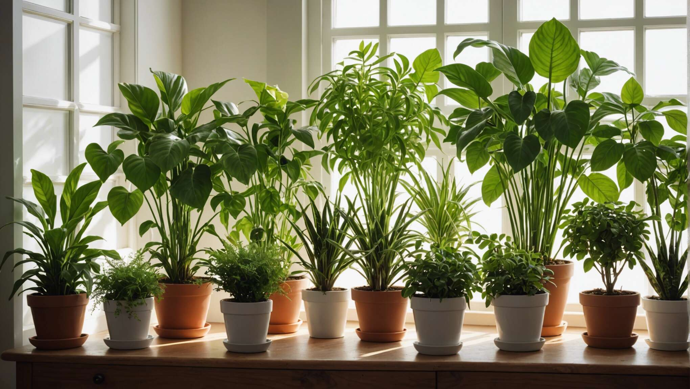
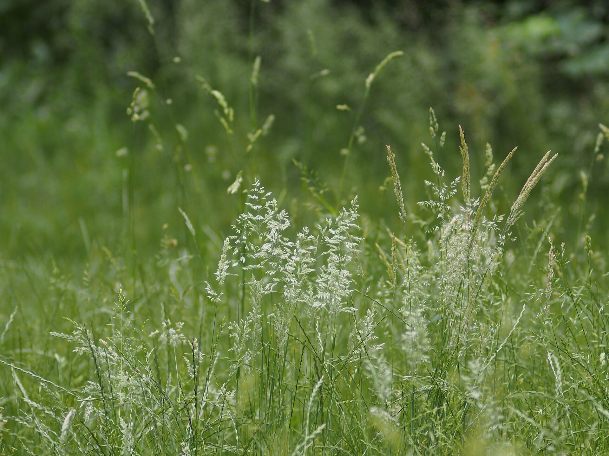
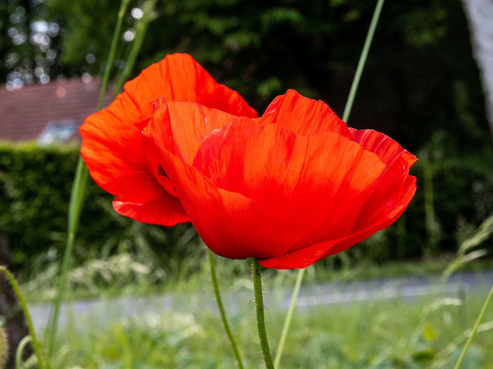

“Des algues aux fleurs”
Découvre comment les plantes ont conquis la Terre

Appareil végétatif : les algues, c'est quoi ?
Ce sont des organismes photosynthétiques au corps en thalle (sans racines, tiges ni feuilles vraies), vivant en milieu aquatique.
Reproduction : le problème des algues
Aucun problème de dessiccation, mais la reproduction dépend de l'eau (gamète mâle nageur).

Appareil végétatif : les mousses
Ce sont des plantes terrestres non vasculaires, sans vaisseaux, fixées par des rhizoïdes (et non de vraies racines).
Leur problème
C'est de se dessécher hors de l'eau.
Innovations face à ce problème
- Cuticule cireuse : une fine couche de cire sur la plante, comme un imperméable.
- Stomates : de minuscules petites portes. Elles s'ouvrent pour laisser entrer l'air dont la plante a besoin pour respirer.
- Spores : de toutes petites poussières qui partent au vent et deviennent de nouvelles mousses.

Appareil végétatif : les fougères
Ce sont les premières plantes vasculaires, avec vraies racines, tiges et feuilles.
Leur problème
Tenir debout et transporter l'eau.
Pour solutionner leur problème, on a :
- Vaisseaux (xylème et phloème) : de petits tuyaux dans la plante. Le xylème fait monter l'eau du sol jusqu'aux feuilles. Le phloème distribue la nourriture partout, comme des camions de livraison.
- Lignine : une matière dure qui renforce les tuyaux, comme un squelette. Elle permet à la plante de tenir debout et de grandir haut.

Les conifères
Ce sont des plantes vasculaires à graines nues, non enfermées dans un fruit.
Leur problème
Chercher à se reproduire sans eau.
Comme innovation, on a :
- Pollen : une poussière jaune qui porte la cellule mâle. Le vent la transporte dans l'air, donc plus besoin de nager.
- Ovule protégé : la cellule femelle est cachée et protégée à l'intérieur d'une écaille.
- Graine nue : la graine est posée sur l'écaille sans être enfermée dans un fruit. Dans une pomme de pin, on voit les graines entre les écailles.

Les graminées
Ce sont des plantes à fleurs à un seul cotylédon (riz, maïs).
Leur problème
La graine doit être protégée et dispersée loin de la plante mère.
Comme solution, on a :
La fleur fabrique la graine et le fruit la protège et l'aide à voyager (chez le riz et le maïs, le grain est le fruit). Le pollen voyage grâce au vent : c'est la pollinisation par le vent.

Les dicotylédones
Ce sont aussi des plantes à fleurs, mais au lieu du vent, elles ont des amis : les insectes. Elles ont de belles fleurs qui attirent les insectes.
Leur problème
Protéger la graine, la disperser, et mieux transporter le pollen, car le vent en gaspille beaucoup.
Comme solution :
La fleur attire les insectes avec ses couleurs et son nectar. L'insecte transporte le pollen directement d'une fleur à l'autre : c'est la pollinisation par les insectes.
Tableau synoptique
| Groupe | Appareil végétatif | Reproduction |
|---|---|---|
| Algues | Thalle (sans racines, tiges ni feuilles vraies) | Dépend de l'eau (gamète mâle nageur) |
| Mousses | Plante terrestre non vasculaire, fixée par des rhizoïdes. Cuticule cireuse et stomates contre le dessèchement | Spores dispersées par le vent |
| Fougères | Premières plantes vasculaires : vraies racines, tiges et feuilles. Vaisseaux (xylème et phloème) et lignine pour transporter l'eau et tenir debout | Spores produites sous les feuilles |
| Conifères | Plantes vasculaires à graines nues, non enfermées dans un fruit | Pollen transporté par le vent, ovule protégé dans une écaille, graine nue (pas besoin d'eau) |
| Graminées | Plantes à fleurs à un seul cotylédon | Fleur qui fabrique la graine, fruit qui la protège et l'aide à voyager. Pollinisation par le vent |
| Dicotylédones | Plantes à fleurs, aux belles fleurs qui attirent les insectes | Pollinisation par les insectes (le pollen va directement d'une fleur à l'autre) |